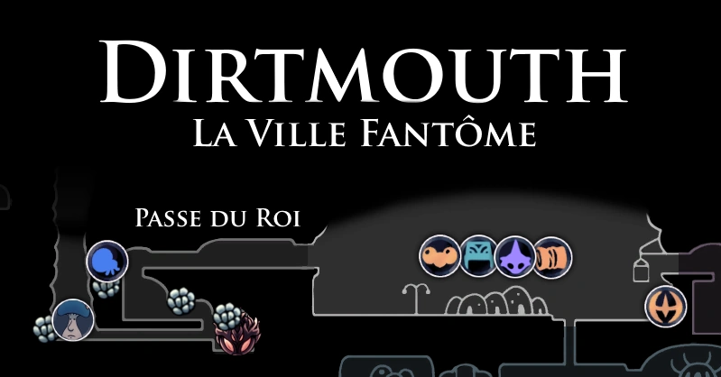
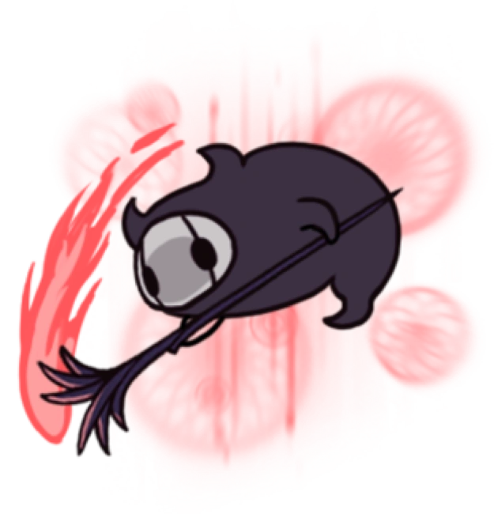
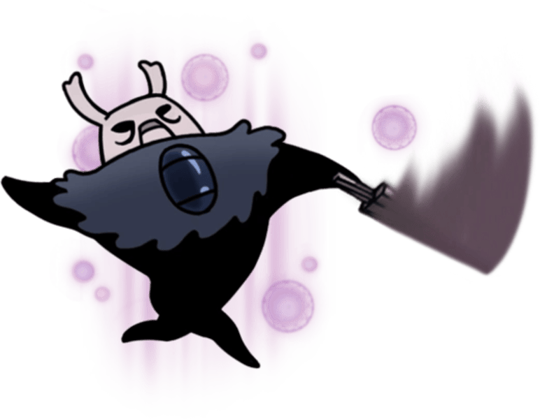
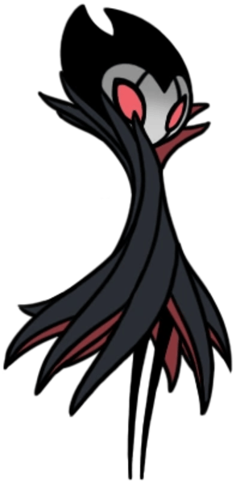
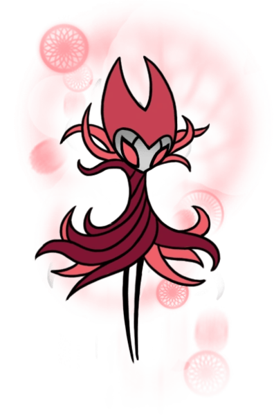

Dirtmouth
Un petit village désertique situé à l'entrée du royaume d'Hallownest. Jadis un lieu animé, il ne reste aujourd'hui qu'un silence pesant.
Carte
Lore
Dirtmouth était à l'origine une ville du royaume débordante de vie, ainsi qu'une étape importante pour les voyageurs allant et venant d'Hallownest. Un pont descendant de la Passe du Roi permettait alors d’accéder facilement à la ville. Les voyageurs pouvaient ensuite rejoindre les différentes régions du royaume en empruntant les Stations de Coléoptères.
Quand L'Infection se répandit dans Hallownest, toutes les entrées du royaume furent scellées pour empêcher sa propagation et même les Stations de Coléoptère fermèrent. Le vieux puits de Dirtmouth devint l'unique entrée d'Hallownest. Au fil du temps, ce puits fut utilisé par de nombreux vagabonds et aventuriers afin d'atteindre les ruines du royaume, mais peu d'entre eux revinrent. Après que le pont menant à la Passe du Roi se soit effondré, les quelques voyageurs désirant encore rejoindre Dirtmouth durent suivre des routes sinueuses depuis les Falaises Hurlantes.
Petit à petit, tous les habitants de Dirtmouth descendirent dans le puits, séduits par les promesses de richesse, de gloire et d'illumination. La ville devint progressivement silencieuse sans qu’aucun habitant ne revint jamais des ruines d'Hallownest.
Connexions
Dirtmouth est relié à ces zones :
Ennemis
-
Crawlid

Un charognard timide. Arpente les cavernes à la recherche de nourriture. Triste et pitoyable. Mérite à peine d’être tué.
-
Mouche Vengeresse

Un prédateur volant. Poursuis ses proies sans relâche. Ces féroces petits chasseurs pourchasseront même les créatures qui font plusieurs fois leur taille. Admirable! Cependant, j’en ai dévoré des centaines sans avoir fait le moindre effort, car ce sont des créatures très faibles.
-
Grimm Despote
Esprit puissant et dévoué de la Troupe de Grimm. Dans le cadre du Rituel, il rassemble des flammes écarlates avec sa torche. Il abandonnera la flamme une fois vaincu. Une étincelle de lumière rouge d'un rêve le plus sombre. Des cauchemars écarlates brillants et sauvages. Les visions danse et les femmes parlent. Brûlez le père, nourrissez l'enfant
Boss de la Zone
Zote le Prince Gris
Zote le Prince Gris est la variante rêvée et puissante de Zote le Puissant, créée par la réimagination de Bretta. Zote le Prince Gris est non seulement très puissant physiquement, mais il fait également preuve de chevalerie, d'où sa loyauté envers Bretta, qui s'imagine être sa «reine».
Grimm Maître de la troupe
Grimm est le maître de La Troupe Grimm, un mystérieux cirque ambulant. En réalité, Grimm et sa troupe se déplacent du Royaume du Cauchemar, un monde séparé du Royaume du Rêve, jusqu'à l'endroit où la Lanterne du Cauchemar a été allumée. Leur but est de rassembler les Flammes du Cauchemar, provenant des ruines d'anciens royaumes, pour alimenter le sinistre être asservissant la troupe, le Coeur du Cauchemar. Le rituel pour nourrir le Coeur du Cauchemar consiste d'abord à nourrir l'héritier de Grimm avec les Flammes du Cauchemar. Ensuite le Roi des Cauchemars, doit être tué pour qu'il renaisse à nouveau grâce à son héritier.
Roi des Cauchemars Grimm
Après avoir nourri entièrement l'héritier de Grimm avec les Flammes du Cauchemar, Grimm plongera au fond de sa tente dans un cauchemar agité avant de renaître par le feu. Le Chevalier doit le frapper avec l'aiguillon des rêves et entrer dans son esprit pour combattre sa variante onirique, achevant ainsi le rituel de la renaissance par le feu.
Évènements
- Accès au cirque de la troupe de Grimm (DLC)
- Station Coléoptère : Station de Dirtmouth
- Rencontre de la marchande Iselda
- Rencontre de la Prêtresse Jiji ou Jinn Âme D'Acier
- Rencontre de l'Ancien
- Rencontre de Divine (DLC)
- Rencontre de Brumm (DLC)
- Rencontre de Zote le Redoutable #2
- Rencontre de Monsieur Champignon #7